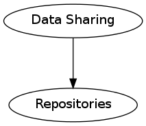
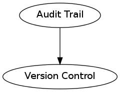
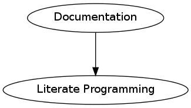

Reproducible Research¶
Our approach to reproducible research consists of three main components:
- Data Sharing (repositories)
- Audit Trail (version control systems)
- Documentation (literate programming)
The idea of reproduciblity is very simple and aligns well with the principles of the scientific paradigm. For each experiment or study, these guidelines stand to benefit all researchers whether in the laboratory or as part of an analysis. following these guidelines. Although, laboratory experiments may be difficult to reproduce and the list of reasons may be numerous—there are very few, if any, reasons why a data analysis should not be reproducible.
There are several plausible reasons why the vast majority of scientific studies do not share data, leave and audit trail and document their work.
- Because it is not the common practice.
- There is no established on one size fits all approach.
- There is a tendency to hold on to the data even after publication.
- The learning curve for implementing these steps can be daunting.
Our aim in this web resource is to promote the three mentioned steps as best practices so as to provide a generalizable approach to reproducible research. At the same time, this resource along with the literate programming editor lpEdit providing resources to reduce the difficulty of implementing these principles.
Data Sharing¶
A best practice for data sharing is through the use of repositories and supplemental materials to journals. It is also important to use formats and include metadata that are generally accepted by the practitioners of a given field of study.

Resources¶
Audit Trail¶
Audit trails are among the easiest aspect of reproducible research to implement—via version control systems.

Resources¶
Documentation¶
Documentation is the focus of this resource and numerous tools are already available for researchers.

Resources¶
External Resources¶
There are of course other aspects to reproducible research, like the usage of appropriate statistical tests. The following resources are for those who wish to learn more about several statistical aspects of reproducible analyses.